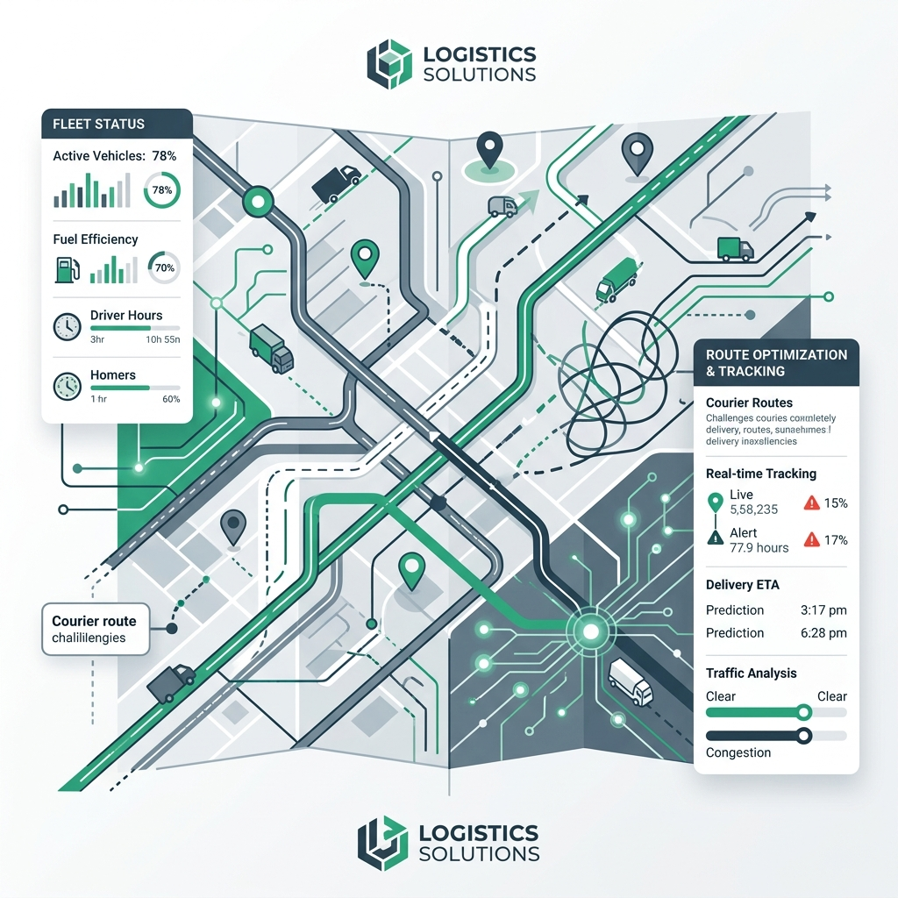
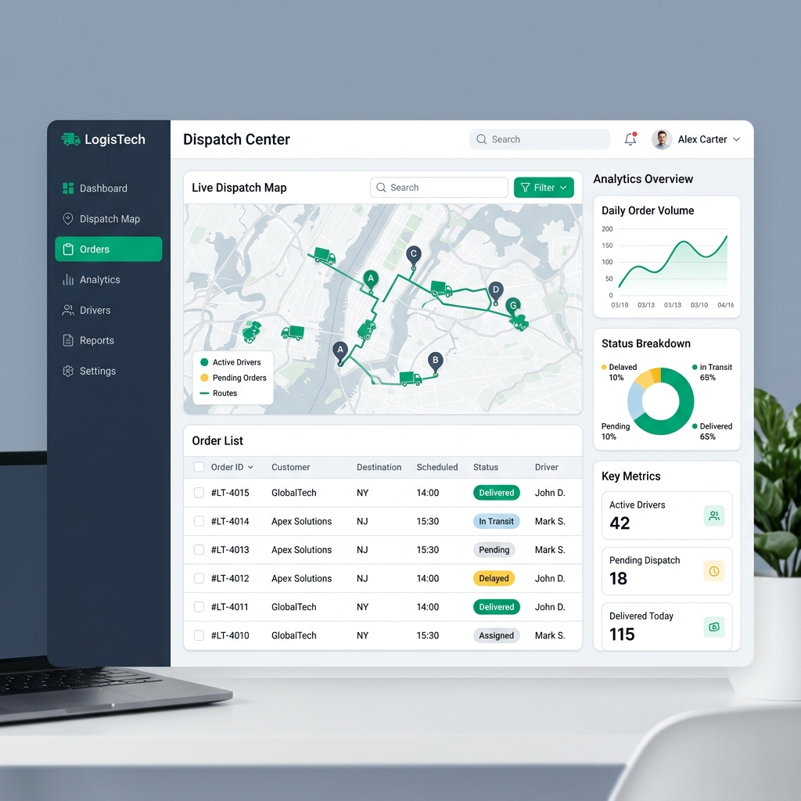
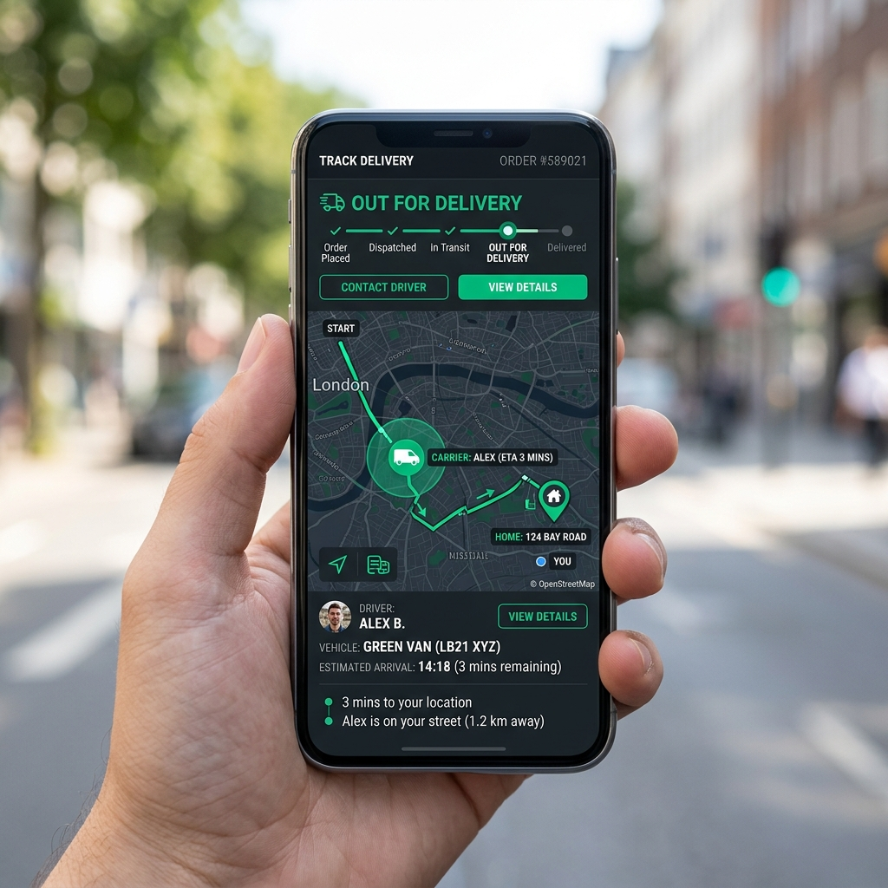

A ferramenta definitiva para o despacho de frotas e entregas
O F/Dispatch ajuda a organizar as tarefas diárias da sua equipe externa de entregadores ou técnicos. Distribua serviços diretamente para os smartphones deles, gerencie rotas e receba comprovantes de entrega digitais em tempo real.
Os prejuízos decorrentes da falta de logística eficiente
Hoje em dia, quase todos os tipos de serviços prestados ao consumidor final realizam entregas em domicílio. Desde laboratórios de análises clínicas ao tradicional delivery de restaurantes, tudo pode ser entregue na porta da casa do cliente. Basta a empresa investir nos recursos corretos.
Essa mudança de comportamento gerou exigências rigorosas quanto à pontualidade. A demora e a falta de visibilidade no atendimento geram atritos graves, fazendo com que o cliente migre para a concorrência sem qualquer hesitação.
- Demora na entrega que desgasta a relação de confiança com o cliente.
- Ausência de rastreio, impossibilitando fornecer a previsão exata de chegada.
- Falta de comprovação imediata do recebimento de produtos ou conclusão de serviços.

F/Dispatch: A solução que vai muito além de um simples aplicativo
A OmegaPi agregou à sua plataforma de rastreamento o F/Dispatch: uma ferramenta robusta para produtividade, otimização de tempo, controle de frotas e gerenciamento logístico.

Tecnologia de ponta integrada 100% à plataforma de rastreamento
Status em Tempo Real
Acompanhe instantaneamente o status de cada tarefa, sabendo quando foi enviada, aceita, iniciada ou finalizada.
Total Controle para a Equipe Externa
Os agentes de campo recebem as tarefas direto no smartphone, podendo aceitar, rejeitar ou reagendar serviços conforme as demandas do dia.
Comprovantes Digitais
Colete assinaturas virtuais diretamente na tela do dispositivo do entregador e solicite fotos do canhoto ou da mercadoria para comprovação inequívoca.
Conheça o Follow: Visibilidade para o cliente final
Para elevar a experiência do consumidor a outro nível, o sistema disponibiliza o **Follow**, um aplicativo web e mobile combinado ao F/Dispatch focado exclusivamente no solicitante da mercadoria ou serviço.
Com o Follow, seu cliente final poderá acompanhar rapidamente o andamento do pedido, visualizar o trajeto do entregador e se programar para o recebimento sem ansiedade.
- Link de rastreamento enviado automaticamente ao cliente.
- Previsão exata e visualização em tempo real do deslocamento do veículo.
- Melhora imediata nos índices de satisfação e redução de chamadas de suporte.
